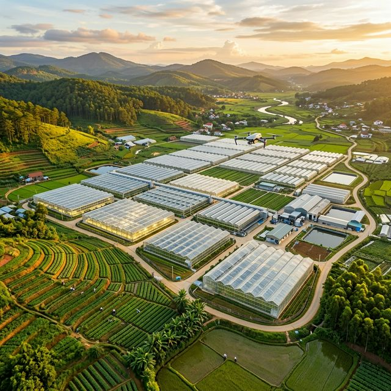

Ứng dụng công nghệ Vision-Language Navigation (VLN) kết hợp AI, Computer Vision và ROS 2 để xây dựng robot tự hành hỗ trợ nông nghiệp trong nhà kính tại Việt Nam.
Nông nghiệp trong nhà kính tại Việt Nam đang đối mặt với nhiều thách thức lớn trong bối cảnh chuyển đổi số và hội nhập quốc tế.
Lao động nông nghiệp tại Việt Nam giảm từ ~70% xuống còn ~27% trong hai thập kỷ qua. Thế hệ trẻ không còn mặn mà với công việc đồng áng truyền thống.
Nhiệt độ trong nhà kính có thể lên tới 45–50°C. Công nhân phải tiếp xúc với thuốc bảo vệ thực vật, dẫn đến các bệnh nghề nghiệp và giảm năng suất lao động.
Hầu hết nhà kính tại Việt Nam vẫn vận hành bằng kinh nghiệm cá nhân. Việc giám sát sâu bệnh, tưới nước, bón phân chủ yếu dựa vào cảm tính mà không có dữ liệu khoa học.
Các robot nông nghiệp hiện có thường chỉ đi theo lộ trình cố định, không hiểu ngôn ngữ tự nhiên và không thể linh hoạt xử lý tình huống phức tạp trong môi trường thực tế.
Công nghệ AI, IoT và robotics đã phát triển mạnh trên thế giới nhưng việc tích hợp chúng vào hệ thống nông nghiệp nhà kính tại Việt Nam vẫn còn rất hạn chế.
Làm thế nào để xây dựng một robot có khả năng hiểu lệnh giọng nói, tự nhìn-hiểu-di chuyển trong nhà kính, và thực thi các tác vụ nông nghiệp một cách tự động?
Ứng dụng Vision-Language Navigation (VLN) — cho phép robot hiểu ngôn ngữ tự nhiên, nhìn môi trường và tự điều hướng để thực thi tác vụ nông nghiệp.
Nông dân nói lệnh bằng tiếng Việt. Whisper (Speech-to-Text) chuyển giọng nói thành văn bản chính xác.
Mô hình ngôn ngữ lớn (LLM) phân tích văn bản để trích xuất Intent, Object, Location. Task Planner tạo kịch bản JSON cho chuỗi hành động.
Camera RGB-D + YOLOv8/OpenCV nhận diện cây trồng, chướng ngại vật. Đồng thời xây dựng bản đồ SLAM để định vị robot trong nhà kính.
Kết hợp ngôn ngữ + thị giác để điều hướng (VLN). Path Planning tránh vật cản bằng Nav2. ROS 2 Middleware giao tiếp với vi điều khiển ESP32/STM32 điều khiển động cơ và công cụ (khoan đất, bơm nước, bật đèn).
Cảm biến IoT & Camera đánh giá kết quả. Nếu thất bại → lên kế hoạch lại. Nếu thành công → LLM tóm tắt báo cáo và phát âm thanh qua loa.
Whisper chuyển giọng nói → văn bản. LLM (GPT/LLaMA) hiểu ngữ nghĩa, trích xuất ý định hành động, đối tượng và vị trí mục tiêu.
YOLOv8 phát hiện đối tượng real-time. Camera RGB-D cung cấp thông tin chiều sâu. SLAM xây dựng bản đồ 3D môi trường.
Kết hợp đa phương thức: ngôn ngữ + hình ảnh → quyết định điều hướng. Đây là lõi đột phá cho phép robot "hiểu" và "thấy" cùng lúc.
ROS 2 làm middleware giao tiếp. Nav2 cho path planning. ESP32/STM32 điều khiển phần cứng: motor, bơm nước, đèn, khoan đất.
Nông dân không cần biết lập trình, chỉ cần nói tiếng Việt — robot hiểu và hành động.
Kết hợp đồng thời ngôn ngữ + thị giác, vượt trội so với robot chỉ dùng cảm biến đơn lẻ.
Không cần lập trình lại khi thay đổi layout nhà kính hay loại cây trồng mới.
Xây dựng trên ROS 2, YOLOv8, Whisper — giảm chi phí, tăng khả năng mở rộng & cộng đồng hỗ trợ.
Dự án không chỉ mang giá trị học thuật mà còn tạo ra tác động thực tế trong khoa học, công nghệ và kinh tế nông nghiệp Việt Nam.
Đóng góp vào lĩnh vực VLN ứng dụng trong nông nghiệp — một hướng nghiên cứu mới tại Việt Nam.
Tạo nền tảng phần mềm và phần cứng mở cho cộng đồng robotics Việt Nam.
Giải quyết bài toán thiếu lao động và nâng cao năng suất canh tác trong nhà kính.
Phù hợp chiến lược chuyển đổi số nông nghiệp và phát triển AI của Chính phủ Việt Nam.
Hướng đến việc xây dựng một hệ sinh thái robot nông nghiệp thông minh "Made in Vietnam", có khả năng mở rộng từ nhà kính đến ngoài trời, từ cây rau đến cây công nghiệp.
Kết hợp AI, IoT, Big Data để tạo nên nền nông nghiệp số — nơi robot là "người bạn đồng hành" của nông dân Việt Nam.

Mô phỏng một ngày làm việc thực tế của robot VLN AgriBot trong môi trường nhà kính trồng cà chua tại Đà Lạt.
Robot tự khởi động, di chuyển dọc các luống cây, chụp ảnh toàn bộ khu vực trồng. Camera RGB-D ghi nhận tình trạng cây, đánh dấu vị trí bất thường.
Dựa trên dữ liệu cảm biến độ ẩm đất, robot di chuyển đến các luống khô và kích hoạt hệ thống bơm nước tích hợp.
YOLOv8 phát hiện lá vàng và đốm bệnh trên cà chua. Robot đánh dấu vị trí, chụp ảnh cận cảnh, và phun thuốc sinh học chính xác vào khu vực bị ảnh hưởng.
Robot nhận diện quả cà chua chín (dựa trên màu sắc & kích thước), sử dụng cánh tay robot nhẹ nhàng hái và phân loại vào các khay theo chất lượng.
Robot tổng hợp dữ liệu cả ngày: số cây đã kiểm tra, lượng nước đã tưới, sâu bệnh phát hiện, sản lượng thu hoạch. LLM tạo báo cáo tóm tắt bằng tiếng Việt.
VLN AgriBot là bước đột phá trong việc kết hợp trí tuệ nhân tạo, thị giác máy tính và robotics vào nông nghiệp nhà kính tại Việt Nam. Bằng cách cho phép robot hiểu ngôn ngữ tự nhiên và tự điều hướng bằng thị giác, chúng tôi mở ra một kỷ nguyên mới cho nông nghiệp thông minh — nơi công nghệ phục vụ con người và nông dân là trung tâm.